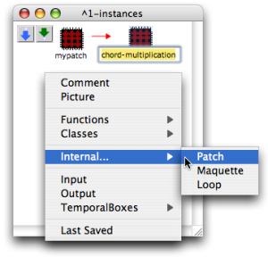
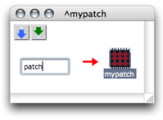
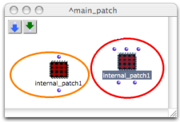

OpenMusic DocumentationHiérarchie de section : OM 6.6 User Manual > Visual Programming II > Abstraction > Abstraction Boxes > Internal Abstractions
OpenMusic DocumentationHiérarchie de section : OM 6.6 User Manual > Visual Programming II > Abstraction > Abstraction Boxes > Internal Abstractions
Navigation : page précédente | page suivante
Attention, votre navigateur ne supporte pas le javascript ou celui-ci à été désactivé. Certaines fonctionnalités de ce guide sont restreintes.
Internal Abstractions
Internal abstractions are only created in patch editors. They are represented by red patch boxes . This section shows how to add an internal abstraction into a patch.
A red patch is autonomous :
it is not attached to any external reference, conversely to a blue patch,
it only "exists" inside the patch where it was created.
Adding an Internal Abstraction : Procedures
Contextual Menu
To add an internal – red – patch in a patch editor :
Double click on its name to edit it. |

|
Directly in the Patch Editor
To add an internal patch directly in a patch editor :
|

|
Internal Programming
An internal patch is programmed just as in any patch, without restriction.
Duplicates
An internal abstraction cannot be affected by the modification of a possible duplicate. Here a duplicate has been added inputs and outputs : the master item is preserved. |

|
Références :
Plan :
Navigation : page précédente | page suivante
A propos...(c) Ircam - Centre Pompidou